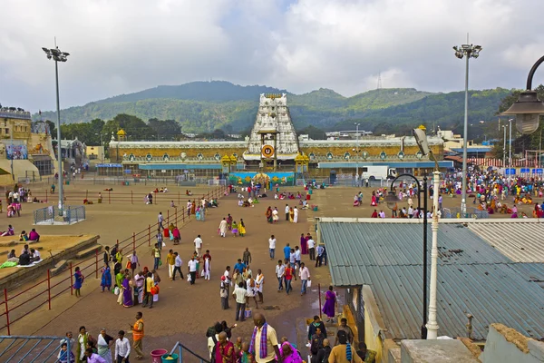
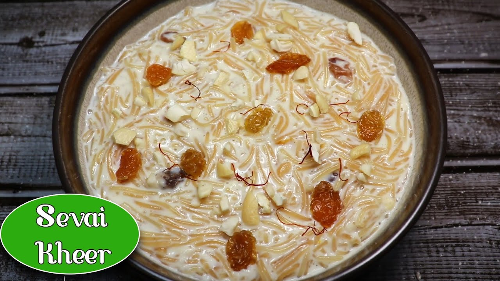

Tirupati, city, southeastern Andhra Pradesh state, southern India. It lies in the Palkonda Hills, about 8 miles (13 km) northeast of Chandragiri and 67 miles (108 km) northwest of Chennai in Tamil Nadu state. Tirupati is known as the abode of the Hindu god Venkateshvara, Lord of Seven Hills. The sacred hill of Tirumala is situated about 6 miles (10 km) northwest of Tirupati in Sri Venkateshwara Sanctuary and National Park. The hill was considered so holy that before 1870 non-Hindus were not permitted to ascend it. At the hill's summit, at an elevation of 2,800 feet (850 metres), is a temple of great antiquity. The temple, nestled among sacred waterfalls and tanks (reservoirs) and dedicated to Venkateshvara, is a fine example of Dravidian art and is one of the most important pilgrimage centres in India. The temple is now the centre of Sri Venkateswara University (1954). Pop. (2001) 228,202; (2011) 287,482.
Seviyan kheer also known as vermicelli kheer is a must at any festival at our place. This creamy seviyan kheer is a North Indian sweet made with wheat vermicelli, milk, sugar, dry fruits and flavored with spices. This incredibly easy recipe of semiya kheer comes together in 20 minutes and makes for an excellent dessert or sweet that can be eaten as is or served with a North Indian meal. I like this recipe alot espicially made by my grandmother.
